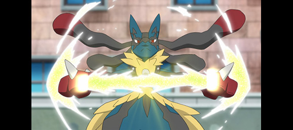
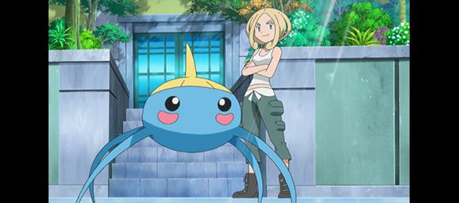
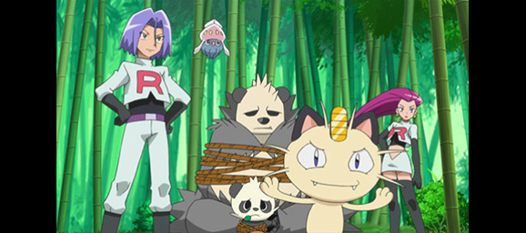
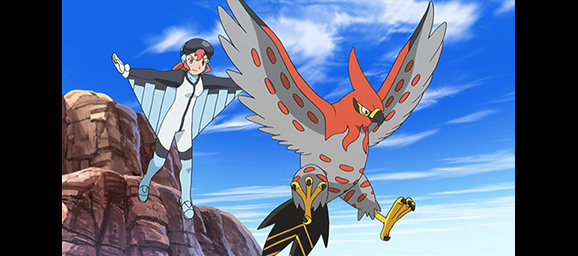
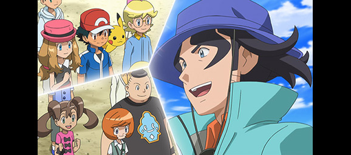

Pokémon News
Pokémon the Series: XY Episodes Added to Pokémon TV
The Kalos region calls to Ash and Pikachu, as the pair continue their journey in Pokémon the Series: XY, which has just arrived on Pokémon TV. Ash is joined by a young inventor named Clemont and his little sister Bonnie. They also befriend another Pokémon Trainer named Serena, who is just setting out on her first adventure. Check out some of the exciting events that happen during the course of this season, and then tune in to Pokémon TV to see the whole story!
The Power of Mega Evolution
While in the Kalos region, Ash meets Professor Sycamore, who has been researching Pokémon Evolution, including a powerful phenomenon known as Mega Evolution. This incredible feat allows a fully evolved Pokémon to undergo a special temporary Evolution before returning to its previous form. To do so, however, a Pokémon and its Trainer must have a strong bond and an item called a Mega Stone (“Lumiose City Pursuit!”). Throughout the course of the season, Ash and his friends will encounter multiple Mega-Evolved Pokémon, including Mega Gardevoir (“The Aura Storm!”). Towards the end of the season, our heroes even learn the origins of Mega Evolution (the aptly titled “Origins of Mega Evolution!”).
Ash Goes for the Bug Badge
A new region means a new set of Gym badges for Ash to earn. Of course, in order to do that, he's going to have to take on the region's Gym Leaders! His first challenge arises when he makes it to Santalune City. When Ash and his friends arrive in the city, they meet a helpful photographer: Viola, the Santalune City Gym Leader. Viola favors Bug-type Pokémon, and her Surskit's Ice Beam covers the ground with a slippery layer of ice (“A Blustery Santalune Gym Battle!”). After an unsuccessful attempt to defeat Viola, Ash's confidence is shaken. A surprise reunion with a forgotten acquaintance reminds Ash that he must remain determined in order to come out on top. Newly inspired, Ash and Pikachu return to face Viola again (“Battling on Thin Ice!”).
Team Rocket's New Pokémon
Ash and his friends may be the stars of Pokémon the Series: XY, but their adventures wouldn't be nearly as entertaining if the meddlesome Team Rocket weren't constantly showing up with another twisted scheme. And while we can always count on Meowth and Wobbuffet to join Jessie and James on their escapades, it's always fun to see what other Pokémon these troublemakers add to their team. The first addition this season comes in the form of a hungry Inkay who can't stop swiping Team Rocket's food. It doesn't take much more than a quick distraction with a sandwich for James to catch the sneaky Pokémon (“A Battle of Aerial Mobility!”). Later, Jessie literally stumbles across a new friend when she trips over a Pumpkaboo, which she promptly catches (“The Bamboozling Forest!”). Despite their villainous intent, Jessie and James have repeatedly proven themselves to be caring Pokémon Trainers, so it's not surprising that Inkay and Pumpkaboo become loyal to the nefarious duo.
Take to the Sky
Upon arriving at Kalos Canyon, Ash and friends see their very first Sky Battle. These exciting matches involve two flying Pokémon battling in midair while their Trainers fly alongside them wearing wing suits. Of course, Ash is eager to try it out, and he accepts a challenge from Sky Battle instructor Moria and her Pokémon partner Talonflame. Ash's Fletchling is ready to fly into action, but Talonflame refuses to battle such a tiny opponent. Ash's Hawlucha is happy to step in—but the brave Fletchling might prove to be a valuable teammate before this battle is finished (“Battles in the Sky!”).
Ash Goes to Camp
Get ready for a week of fun, friends, and bonding with your Pokémon when Ash and his friends attend Professor Sycamore's annual Pokémon summer camp! While there, Ash makes even more friends including Tierno and his Squirtle, Trevor and his Charmander, and Shauna and her Bulbasaur. Of course, Team Rocket is on the scene as well, disguised as camp chefs (“Summer of Discovery!”). Exciting escapades ensue when the campers are split into teams to film their own Pokévision videos (“Day Three Blockbusters!”) and to go on a trek to collect stamps by visiting checkpoints on a map (“Foggy Pokémon Orienteering!”). Of course, the big attraction is the Team Battle competition, where teams of campers must work together and combine their Pokémon's moves to win (“Battling into the Hall of Fame!”). Who will come out on top?
These are just some of Ash's early adventures in the Kalos region. Check out Pokémon the Series: XY on Pokémon TV to see what other incredible situations our heroes find themselves in. Remember that you can load up the Pokémon TV mobile app and enjoy these classic episodes on the go!